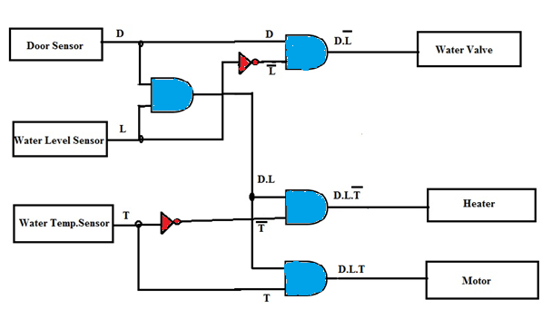

To construct logic circuit of washing machine control using a generalized simulator and verify its output.
When logic gates are connected together to produce a specific output for certain specific combinations of input variables, with no storage involved, the resulting circuit is called as a Combinational logic circuit. The combination of basic gates can be used for a variety of applications such as washing machine control, level monitoring and indicating applications in manufacturing processes, elevator control applications, a warning indicating applications and binary addition -subtraction and multiplication circuits.
For simplicity, consider a three-sensor based washing machine controller namely Door Sensor, Water Level Sensor and Temperature Sensor that produce digital outputs. Let the controlling action include control of Water Valve, Heater and Motor. All these are digitally controlled devices.
The motor of the washing machine turns ON when the right temperature, the right water level and obviously when the door of the machine is closed.
The system design involves three inputs: D, L & T representing Door position, Level & Temperature respectively. It controls three output devices: W, H & M representing Water Valve, Heater & Motor respectively. Let us decide the logics behind the system:
D = 0 ------- Door Open;
D = 1-------- Door Closed (desired)
L = 0 --------Water Level is LOW;
L = 1 --------Water Level is HIGH (satisfactory)
T = 0 --------Temperature is LOW
T = 1 --------Temperature is HIGH (right value)
The truth table for this application can be developed by logical reasoning:
| Door(D) | Level(L) | Temperature(T) | Valve(V) | Heater(H) | Motor(M) |
|---|---|---|---|---|---|
| 0 | 0 | 0 | 0 | 0 | 0 |
| 0 | 0 | 1 | 0 | 0 | 0 |
| 0 | 1 | 0 | 0 | 0 | 0 |
| 0 | 1 | 1 | 0 | 0 | 0 |
| 1 | 0 | 0 | 1 | 0 | 0 |
| 1 | 0 | 1 | 1 | 0 | 0 |
| 1 | 1 | 0 | 0 | 1 | 0 |
| 1 | 1 | 1 | 0 | 0 | 1 |
Considering only those input conditions that produce a HIGH output, we get the reduced Boolean expressions for controlling as follows:
Water Valve (V) = D.L'
Heater (H) = D.L.T'
Motor (M) = D.L.T
The corresponding combinational logic circuit is as shown in Figure 1.
>